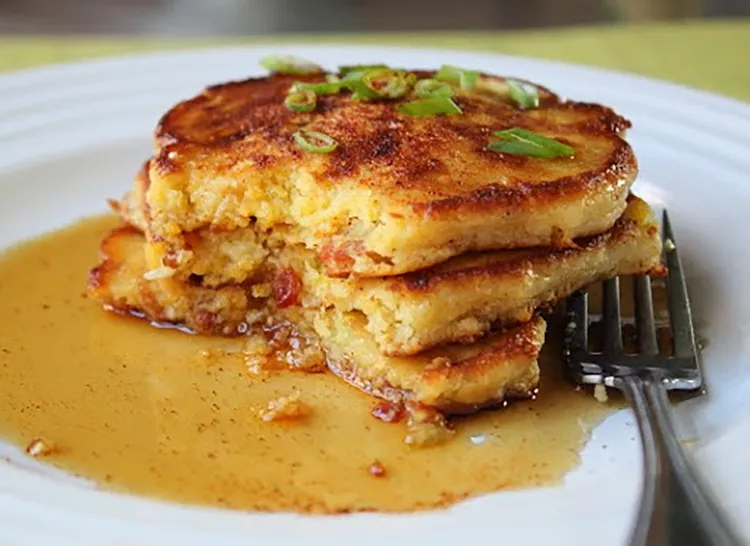

Pancakes

Chef John's Sweet-Savory Cornmeal Mancakes
Sweet/savory hybrids can be tricky sometimes but I think this worked beautifully. We are talking about bacon, cheese, and onions after all, so it wasn't that big of a shock. The way the chipotle-spiced maple syrup brought everything together was a risk well rewarded.
Ingredients
- 8 ounces bacon, chopped
- ½ cup thinly sliced green onions
- 1 ¼ cups all-purpose flour
- ¾ cup cornmeal
- 1 tablespoon baking powder
- ¾ teaspoon salt
- 1 pinch ground black pepper
- 1 pinch cayenne pepper
- 1 ⅓ cups milk
- 2 ounces sharp Cheddar cheese, grated
- 2 large eggs, beaten
- 2 tablespoons butter, melted
- 1 tablespoon white sugar
- 1 cup warm maple syrup, or to taste
- ⅛ teaspoon chipotle chile powder, or to taste
- 1 teaspoon vegetable oil
- 1 teaspoon butter
Steps
- Place bacon in a large skillet and cook over medium-high heat, stirring occasionally, until evenly browned, about 10 minutes; remove from heat. Stir green onions into bacon and saute in hot fat until slightly softened, 1 to 2 minutes. Transfer bacon mixture to a strainer to drain, retaining drippings.
- Whisk flour, cornmeal, baking powder, salt, black pepper, and cayenne pepper together in a large bowl. Add drained bacon mixture, milk, Cheddar cheese, eggs, melted butter, and sugar to flour mixture; whisk until batter is smooth. Let batter rest for 10 minutes.
- Combine maple syrup and chipotle chile powder together in a small bowl; whisk until chile powder is completely dissolved.
- Heat 1 teaspoon bacon drippings, 1 teaspoon oil, and 1 teaspoon butter on a griddle over medium-high heat. Drop batter by 1/4-cupful onto the griddle and cook until bubbles form and the edges are dry, 3 to 4 minutes. Flip and cook until browned on the other side, 2 to 3 minutes. Repeat with remaining batter. Transfer pancakes to plate and top with maple syrup.